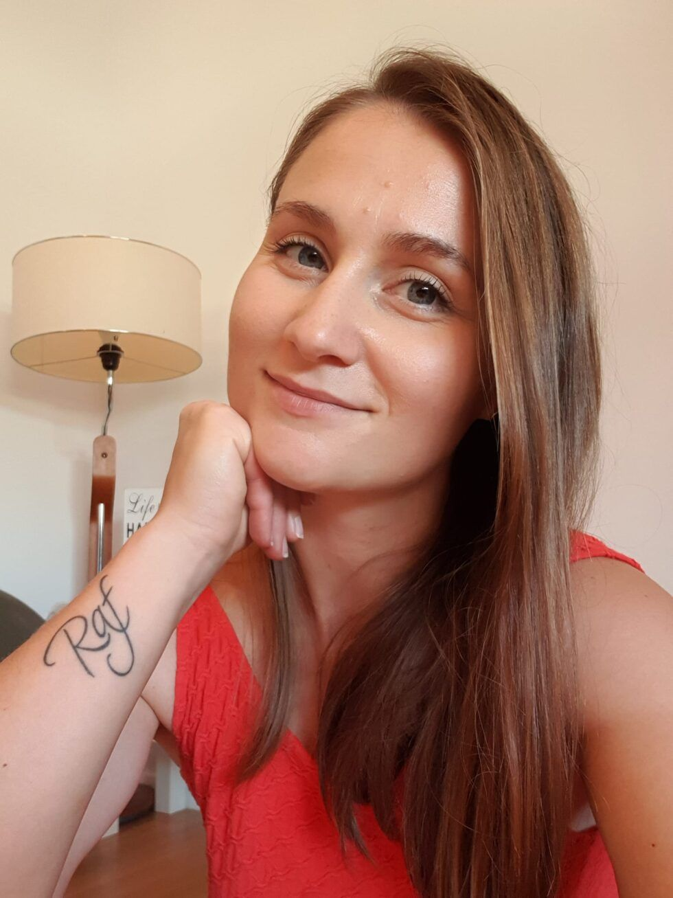
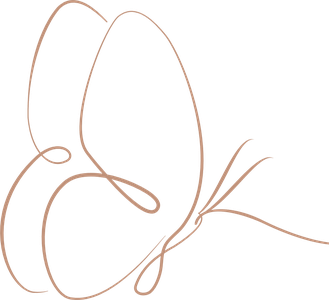
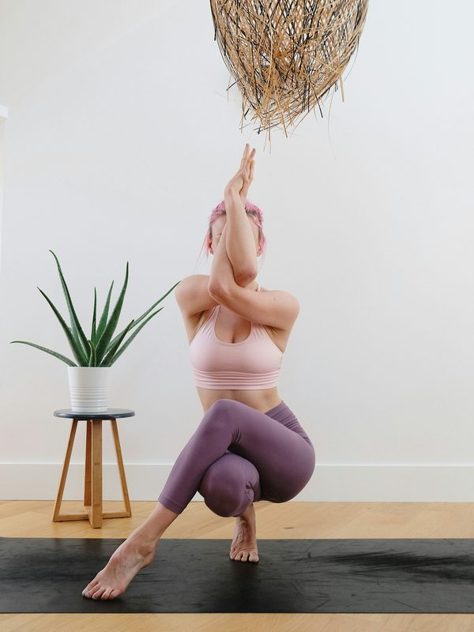

Učiteljica sam yoge, voditeljica sistemskih konstelacija i autorica Samadhi pristupa.

Moje osobno iskustvo, godine dubokog rada na sebi i odnosi s ljudima oblikovali su ono što danas živim i prenosim drugima.
Dugo sam vjerovala da vrijedim onoliko koliko mogu dati drugima. Trudila sam se biti dobra, draga, odgovorna i ne tražiti previše. Uočavala sam što je potrebno svima oko mene prije nego što bih se zapitala što je potrebno meni. Stišavala sam svoj glas, spuštala vlastite standarde i prelazila preko sebe vjerujući da ću tako zaslužiti ljubav, mir i osjećaj da sam dovoljna. Znala sam što trebam napraviti, što se od mene očekuje i kako zadržati mir oko sebe. Sve slabije sam znala što osjećam, što želim i što je istinito za mene.
Mislim da se upravo tako ljudi udalje od sebe. Polako. Negdje putem naučimo da je pripadanje važnije od vlastite istine. Utišamo dijelove sebe koji su previše glasni, osjećajni, zahtjevni ili drugačiji. Prilagodba nam pomaže sačuvati ljubav, prihvaćenost i sigurnost, a cijena često postane naš odnos sa sobom. Život izvana može izgledati sasvim u redu, dok iznutra raste osjećaj da nešto nedostaje. Funkcioniramo, ispunjavamo obaveze, brinemo o drugima i nastavljamo dalje, a sve manje osjećamo gdje smo u svemu tome mi. Taj osjećaj poznajem iznutra jer sam ga godinama živjela.
Moje je tijelo prvo pokazalo da tako više ne mogu. Govorilo je kroz nemir, napetost, iscrpljenost, bol i osjećaj stalne unutarnje borbe. Godinama me učilo da ono što potiskujemo ne nestaje. Samo pronalazi drugi način da bude viđeno.
Promjena je počela kada sam odgovore počela tražiti dublje od vlastitih misli. Kroz yogu i rad s tijelom, psihoterapiju, sistemske konstelacije, životna iskustva i godine iskrenog suočavanja sa sobom počela sam ponovno osjećati vlastiti glas, potrebe, granice i intuiciju. Odgovori su dolazili polako, korak po korak. Morala sam otpuštati slike o sebi, odnosima i životu kakvi bi trebali biti kako bih mogla osjetiti što je zaista moje.
Najdublji preokret dogodio se kada je završio moj unutarnji rat. Dijelovi mene koje sam godinama potiskivala, odbacivala ili ih se sramila počeli su se vraćati na svoje mjesto. S njima su se vratile moja energija, jasnoća, snaga i sposobnost da vjerujem sebi. Moj povratak sebi počeo je kada sam si dopustila osjećati ono što osjećam, tražiti ono što mi je potrebno i postaviti granicu ondje gdje sam prije prelazila preko sebe.
Učila sam zauzeti prostor koji mi pripada. Ostati svoja i onda kada se to drugima ne sviđa. Donositi odluke iz onoga što duboko osjećam i znam. Graditi odnos sa sobom u kojem ljubav više ne moram zaslužiti odricanjem od vlastitih dijelova. Pronašla sam nešto mnogo važnije od savršenog života. Pronašla sam unutarnji oslonac i mir koji nastaje kada živim u skladu sa sobom.

Odnos sa sobom prepoznajemo po tragovima koje ostavlja u našem životu. Vidimo ga u ljudima koje biramo, odnosima u kojima ostajemo i onome što smo spremni prihvatiti. U načinu na koji postavljamo granice, razgovaramo sa sobom, odnosimo se prema vlastitom tijelu, biramo posao i donosimo odluke.
Partnerski odnos pokazuje koliko se cijenimo i što smo spremni prihvatiti.
Granice otkrivaju vjerujemo li da imamo pravo na vlastite potrebe.
Tijelo nam govori o svemu što predugo nosimo, potiskujemo ili ne želimo čuti.
Autentičnost, emocije, tijelo, intuicija, odnosi, posao i zdravlje grane su istog stabla. Korijen je odnos sa sobom. Iz tog odnosa volimo, biramo, postavljamo granice i određujemo koliko prostora sebi dopuštamo zauzeti u vlastitom životu. Kada se promijeni odnos sa sobom, počinje se mijenjati način na koji živimo sve ostalo.

Samadhi je povratak sebi i povezivanje svih svojih dijelova u jednu cjelinu. To je proces u kojem ponovno upoznajemo ono što smo nekada utišali, prilagodili ili odbacili kako bismo bili prihvaćeni, voljeni i sigurni. Dio u nama koji zna tko smo, što osjećamo i kako želimo živjeti može godinama biti prekriven strahom, usvojenim obrascima, obiteljskim lojalnostima i tuđim očekivanjima. Ali i dalje je tu. Često znamo mnogo o sebi. Razumijemo svoje obrasce i možemo objasniti zašto nešto radimo. Stvarna promjena počinje kada tu spoznaju osjetimo u tijelu i počnemo je živjeti kroz odnose koje biramo, granice koje postavljamo i odluke koje donosimo.
Samadhi je svakodnevni odnos sa sobom. Sposobnost da zastanemo, čujemo što se u nama zaista događa i razlikujemo vlastiti glas od straha, naučenih reakcija i tuđih očekivanja. Iz tog odnosa nastaju mir, jasnoća, autentičnost, unutarnja sigurnost i sloboda da svoj život gradimo iz vlastitog centra. Srž Samadhija je živjeti u skladu sa svojom unutarnjom istinom.
Kroz jednu granicu koju napokon postavimo.
Jednu odluku koju više ne odgađamo.
Jedan razgovor u kojem izgovorimo ono što stvarno osjećamo.
Jedan trenutak u kojem ostanemo uz sebe umjesto da se ponovno napustimo.
Najljepši dio mog rada događa se kada osoba počne živjeti kao da joj vlastiti život zaista pripada. Kada počne vjerovati sebi, zauzimati prostor koji joj pripada i donositi odluke iz svoje odrasle, čvrste pozicije.
Susret počinje ondje gdje se ti u tom trenutku nalaziš, s onime što živiš, osjećaš i nosiš. Pristup prilagođavam osobi koja je ispred mene jer svatko nosi svoju priču, svoj ritam i vlastiti način na koji se kroz život naučio štiti.
Kroz individualni rad, sistemske konstelacije, tijelo, dah, emocije i razgovor stvaram prostor u kojem možeš zastati i osjetiti što se u tebi zaista događa. Prostor u kojem si viđen i saslušan, u kojem tvoje iskustvo ima mjesto i u kojem možeš susresti sebe ispod unutarnje buke, obrana i obrazaca.
Vjerujem da promjena počinje osjećajem sigurnosti u vlastitom tijelu. Kada se osjetimo dovoljno sigurnima, um se prestaje boriti, a tijelo počinje otpuštati ono što više ne treba nositi. Tada jasnije osjećamo svoje potrebe, granice i smjer kojim želimo krenuti.
Moja je uloga hodati uz tebe, postavljati prava pitanja i pomoći ti da jasnije čuješ vlastiti glas. Da razlikuješ ono što je zaista tvoje od onoga što si godinama nosio kao svoju obavezu, krivnju ili strah. Želim da nakon našeg susreta osjetiš više sebe. Da ti bude lakše stajati iza onoga što osjećaš, želiš i znaš. Da vjeruješ svojoj intuiciji, jasnije osjetiš svoje granice i pronađeš unutarnji oslonac koji ostaje uz tebe i onda kada se okolnosti oko tebe mijenjaju.
Svijet svakoga od nas treba upravo onakvog kakav u svojoj biti jest. Vjerujem da naš glas, osjetljivost, snaga, iskustvo i način na koji osjećamo život imaju svoje mjesto i vrijednost. Život postaje naš kada ga počnemo graditi iz onoga što duboko u sebi znamo da je istinito.
„Ako ti moj put može biti svjetlo na dijelu tvog, bit će mi čast hodati ga zajedno s tobom.“Rezerviraj besplatni uvodni razgovor